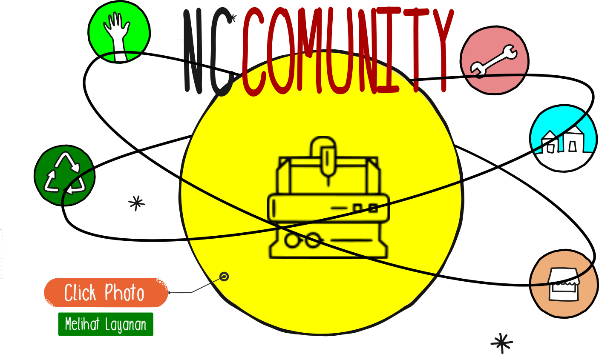
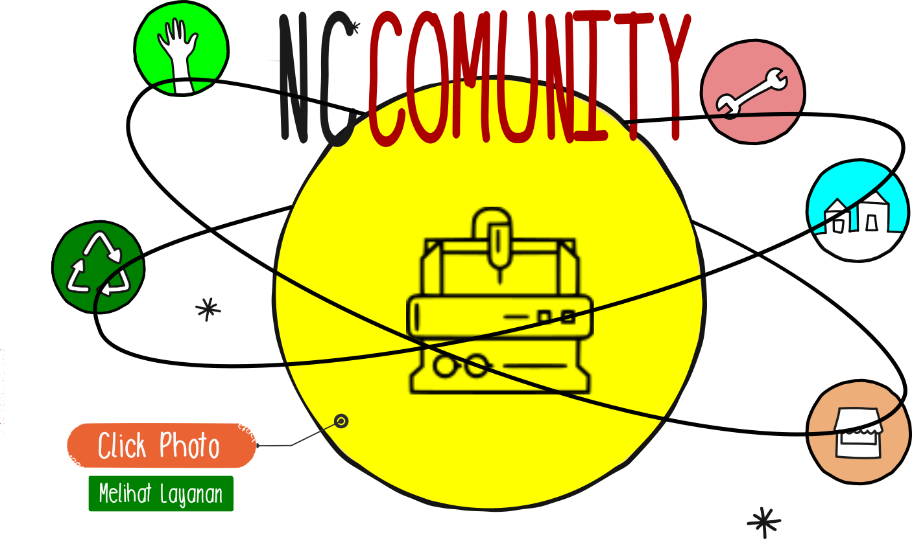
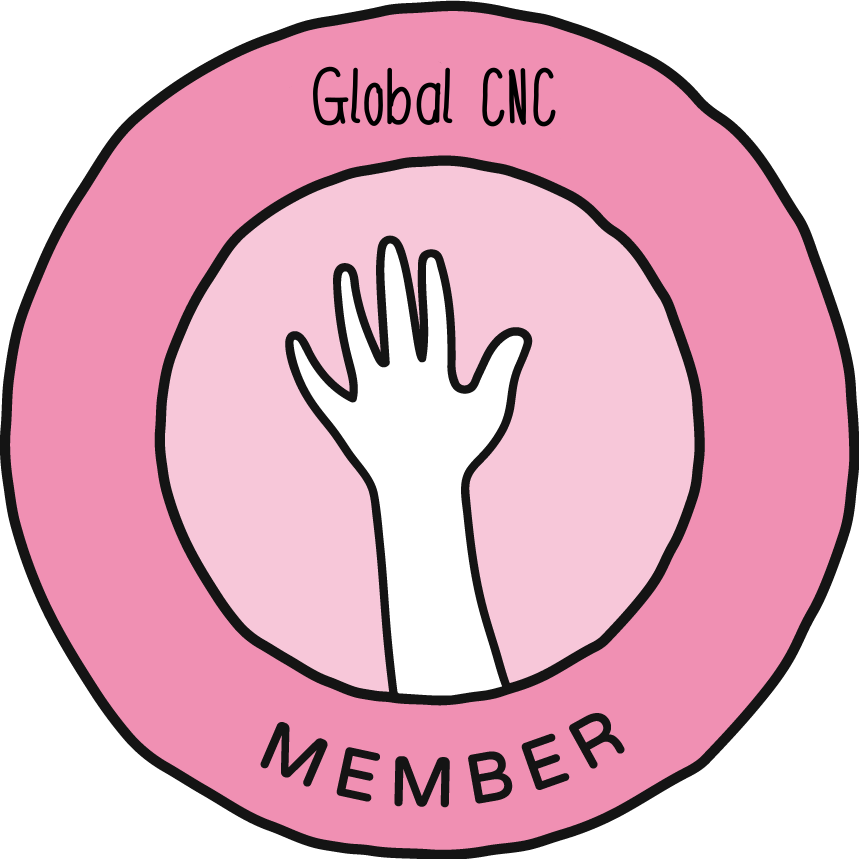
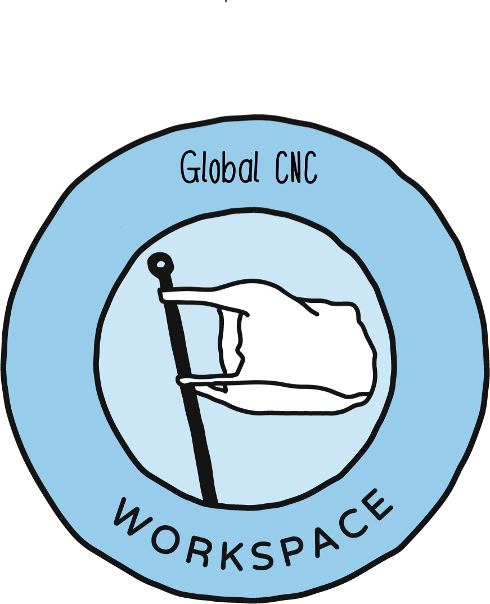
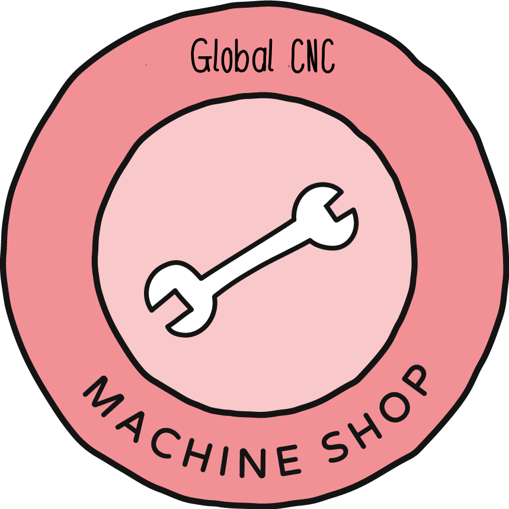
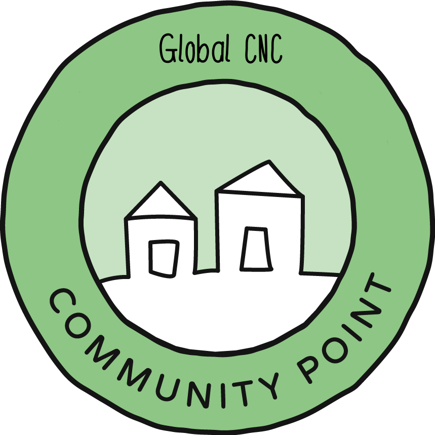
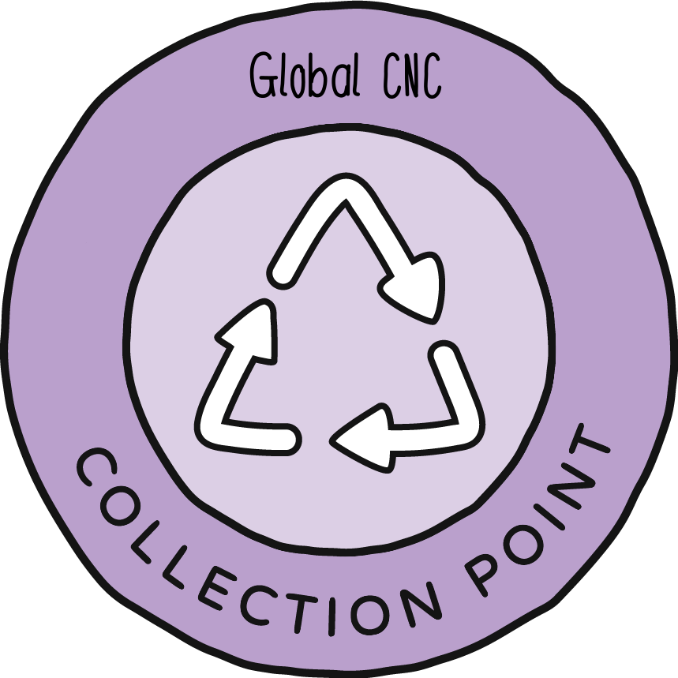

Bagaimana alam semesta bekerja
Hmm ya.. ini pertanyaan yang agak sulit. Mungkin lebih baik memulai dari si kecil kita sendiri. Peluang kerja CNC Berharga. Bagaimana cara kerjanya, apa peran dan pedomannya, bagaimana kita dapat membantu, dll. Pekerjaan percetakan 3D ini telah menjadi bisnis global yang besar, orang-orang di seluruh dunia mencoba membuat produk baru dengan tinkan efektifitas yang tinggi. Untuk melakukan ini dengan benar, kita membutuhkan orang yang berbeda dan keahlian yang berbeda. Jadi di dalam alam semesta ada peran yang berbeda untuk dipilih, beberapa lebih teknis, beberapa lebih sosial. Di bawah ini ikhtisar peran yang kami miliki saat ini.
Ruang di alam semesta
Di dalam Alam Semesta kita memiliki Ruang-ruang yang berbeda. Setiap Ruang memainkan peran yang berbeda. Dengan cara ini orang dapat fokus pada tugas mereka sendiri tetapi secara lokal semua bekerja sama. Ruang yang berbeda memiliki tugas yang berbeda dan Anda dapat mengenalinya dengan ikon dan warnanya.
| Icon | Mission |
|---|
|  | Anggota
Akan menjadi Pekerjaan Berharga bagi Anggota adalah awal dan akhir dari siklus Percetakan. Mereka menyediakan material awal dan memproduksi produk berkwalitas Bagi industri kecil dan menengah.. |
|  | Ruang Kerja
Pekerjaan CNC Berharga Ruang kerja adalah tempat di mana logam diubah dari bahan dasr menjadi bahan atau produk yang berharga. Ada lima ruang kerja yang berbeda: sketsa kasar, model, toolpath, penggilingan, dan finishing. |
|  | Toko mesin
mesin Toko Mesin memproduksi dan membuat suku cadang, cetakan, dan seluruh mesin untuk ruang kerja dan proyek lain di jaringan pekerjaan lokal. |
|  | Community Point
Community Points menghubungkan dan mengembangkan jaringan secara lokal. Memperkuat komunitas lokal yang ada sambil membawa lebih banyak & lebih banyak orang. |
|  | Titik Pengumpulan
Pengumpulan mengumpulkan lebih bayang pekerja dari tetangga, organisasi, dan bisnis untuk digunakan oleh Ruang Kerja CNC lokal. |
Catatan: Saat ini Collection Points memiliki tugas terberat. Mereka membutuhkan banyak kerja komunitas, membangun kesadaran lokal dan memiliki model bisnis yang sulit (masih mencari tahu). Mereka sangat mengandalkan people power. Jadi pastikan untuk mendukung mereka. Bawakan mereka kue 🍪
Jumlah Spaces secara lokal.
Sulit untuk mengatakan berapa banyak Pekerjan mesin CNC yang Anda dibutuhkan di wilayah lokal Anda. Itu tergantung pada kepadatan, jumlah orang dan volume kebutuhan jasa percetakan yang mereka gunakan. Tetapi untuk memberi Anda indikasi di sini Anda dapat melihat rasio antara ruang kerja. Paling terlihat: Ada sejumlah besar Poin jasa yang dibutuhkan untuk mesin can anda, khususnya di awal untuk mengedukasi masyarakat. Dan hanya 1 Poin Komunitas. Dengan cara ini ada satu titik di mana Spaces dapat bersatu dan berkolaborasi satu sama lain.
Mulai Ruang Anda di Alam Semesta
Ada beberapa hal yang perlu diperhatikan saat menyiapkan Space.
Apa keahlian Anda: Mungkin yang paling penting adalah melihat apa keahlian Anda dan apa yang ingin Anda lakukan. Toko Mesin sangat teknis, Poin Komunitas lebih bersifat sosial dan tentang menghubungkan orang. Setiap Ruang sangat berbeda, jadi kami sangat menyarankan untuk menjelajahi dan membandingkannya terlebih dahulu di bagian starterkit kami di situs web. Ini memberikan indikasi yang baik apa yang cocok untuk Anda.
Apa yang dibutuhkan secara lokal: Berapa banyak Space yang sudah ada dan apa yang dibutuhkan di daerah saya. Cara terbaik adalah pergi ke peta kami, melihat-lihat dan berhubungan dengan Poin Komunitas, jika ada untuk mempelajari lebih lanjut.
Berapa anggaran Anda Kami senang jika orang-orang dapat mempertahankan diri mereka sendiri dalam jangka panjang, menyiapkan Ruang Anda sebagai bisnis sangat membantu untuk mencapai hal ini. Tetapi setiap Space melakukan ini sedikit berbeda, beberapa memerlukan investasi tinggi, beberapa tidak. Pertimbangkan ini sebelum Anda ingin memulai
Menjadi bagian dari ekosistem global
Sangat menyenangkan menjadi bagian dari komunitas global orang-orang yang berpikiran sama, Anda selalu dapat menemukan tempat untuk tidur di seluruh dunia :) Tapi itu juga sangat berguna. Di satu sisi Anda dapat menggunakan Perselisihan kami untuk berbagi ide, saran, atau menemukan jawaban atas pertanyaan Anda. Dan kami memiliki platform komunitas online tempat Anda dapat menemukan lebih banyak informasi, peretasan, dan peningkatan yang dihasilkan oleh anggota di seluruh dunia. Informasi ini dapat Anda ambil, tetapi juga baik untuk memberikan kembali dan berbagi hal-hal yang kita pelajari. Jadi kita semua bekerja secara lokal, tetapi berbagi pengetahuan secara global.